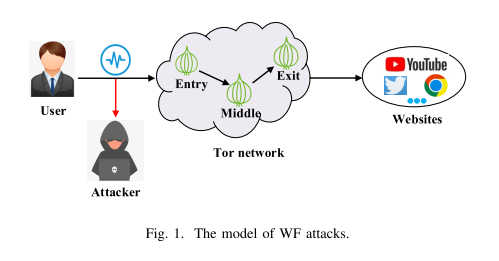
网站指纹（Website Fingerprinting, WF）利用加密流量的方向与节奏识别访问对象
Tor（洋葱路由）为用户随机选择入口、中间、出口三跳。观察者位于用户与入口节点之间，看不到目的地，但能看到每个包的方向、数量与到达时间；攻击者据此采集流量轨迹（trace）并训练分类器。
三类深度神经网络（Deep Neural Network, DNN）攻击：DF（Deep Fingerprinting）97.05%、Var-CNN 95.88%、AWF（Automated Website Fingerprinting）87.74%；输入均为包方向构成的突发序列（burst sequence）。
对抗样本（Adversarial Example, AE）防御开销低，但要替代填充（padding）类方法，必须同时满足三个条件
Mockingbird 需要完整流量轨迹（trace）才能求扰动，而完整 trace 只有在通信结束后才可得，因此无法在线部署。
对抗训练（Adversarial Training, AT）把扰动样本加入训练即可恢复识别能力：simple AT 只用攻击者自己的数据，advanced AT 合并多个攻击者的数据。DF 的攻击成功率（Attack Success Rate, ASR）在 advanced AT 下回升至 57.17%。
现有防御多在闭环（closed-world，只考虑监控网站）评估；开环（open-world，还需处理未监控网站）中，AWA 因未监控网站样本不足而无法使用。
论文的增量在于同时补齐三项，而不是提出新的扰动形式
| 方法 | 轨迹无关 | 抗 simple AT | 抗 advanced AT | 开环可用 |
|---|---|---|---|---|
| Mockingbird | × | × | × | — |
| AWA | √ | √ | × | × |
| ALERT | √ | √ | √ | √ |
闭环（closed-world）只考虑监控网站；开环（open-world）还需处理未监控网站。依据论文 §III.B 与 §VI；“—”表示未评估。
左半部分离线训练生成器，右半部分在线注入扰动
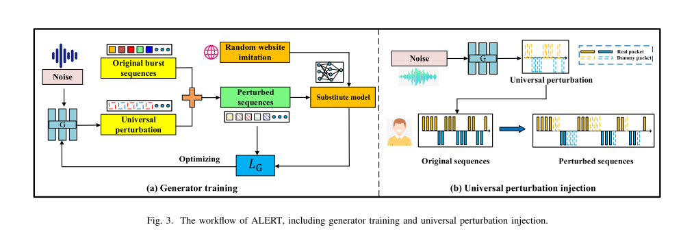
ALERT 以生成对抗网络（Generative Adversarial Network, GAN）训练生成器 G_O（每个网站一个）：输入随机噪声 z，输出不依赖具体 trace 的扰动；扰动可在浏览开始前算好。
为 W_O 随机选择模仿对象 W_T，使扰动后的流量接近 W_T；不同用户得到不同的 T，扰动随之分散。
普通对抗样本依赖具体输入，UP 要求对同一网站的任意 trace 生效
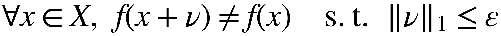
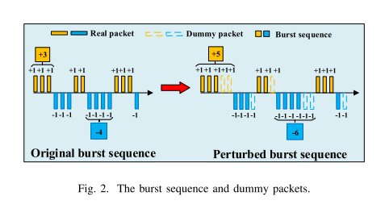
随机网站模仿（Random Website Imitation）：同一网站的不同用户模仿不同对象，攻击者难以用一套样本覆盖
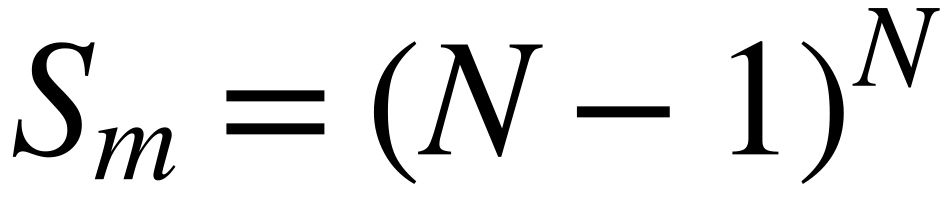
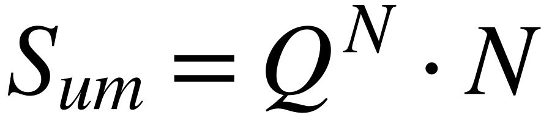
N=95 时，模仿配置（profile）总数 S_m=94⁹⁵，用户碰撞概率可忽略；论文据此认为攻击者难以取得与受害者同分布的样本。
Q=40,000，S_um=Qᴺ·N；未监控网站越多，模仿配置空间越大。
配置空间的大小由 N、Q 与用户数共同决定，论文据此论证用户间扰动难以被统一覆盖。
生成器只接收噪声，判别器由预训练的 DF 充当
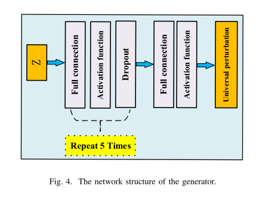
模仿效果、攻击效果与带宽开销同时进入目标函数
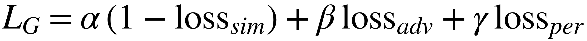
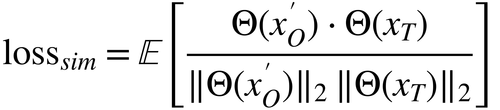
Θ(x'_O) 与 Θ(x_T) 的余弦相似度；使扰动后的特征靠近模仿对象。
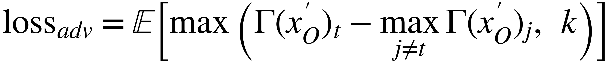
压低原网站置信度，抬高其他网站的最高置信度；k=0 用于稳定训练。
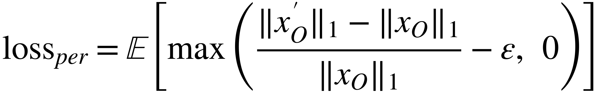
额外流量占比超过 ε 时产生惩罚；ε=0.22 对应约 20% 的额外带宽。
每个网站独立训练，N 个生成器共用同一套替代模型
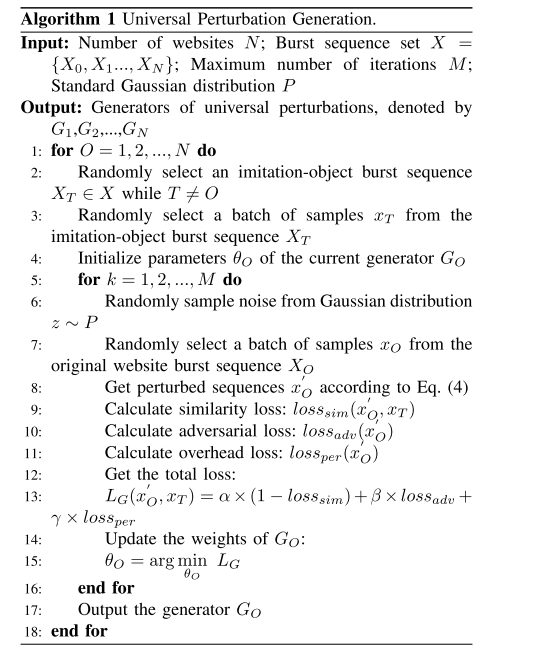
训练需要离线 trace；在线推理只需要 z 与 G_O。算法中的损失与更新步骤与式 (4)、(6) 对应。
扰动向量只含非负整数，每个元素对应一个 burst 位置的填充包（dummy packet）数量
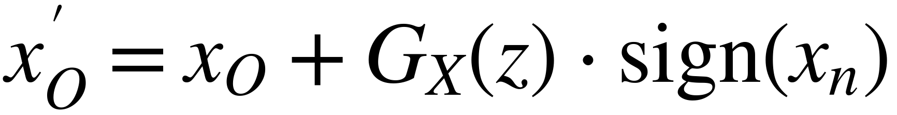
| x_n | sign(x_n) | 含义 |
|---|---|---|
| x_n > 0 | +1 | 上行 |
| x_n = 0 | 0 | 不插包 |
| x_n < 0 | −1 | 下行 |
复用 Sirinam 等的公开数据集；闭环与开环使用同一数据来源
| 项目 | 设置 |
|---|---|
| 监控网站 | 95 个（Alexa Top-100） |
| 监控样本 | 每站 1,000 条 trace |
| 未监控网站 | 40,000 个（Top-50000 排除 Top-100） |
| 未监控样本 | 每站 1 条 trace |
| 序列长度 | 2,000（补零 / 截断） |
| 替代模型 | DF |
| 评估攻击 | DF、AWF、Var-CNN |
| 扰动预算 ε | 0.22（对照 0.10 / 0.90） |
z 维度 2,000；batch 64；Adam；epoch 200
α=β=γ=1；k=0；ε=0.22
生成器重复 5 次；序列长度 2,000
对比方法：WTF-PAD、Walkie-Talkie、Mockingbird、AWA
攻击者只用自己采集的扰动样本训练分类器
| 方法 | 开销 | DF | AWF | Var-CNN |
|---|---|---|---|---|
| 无防御 | 0.00% | 97.05% | 87.74% | 95.88% |
| WTF-PAD | 64.00% | 86.00% | 29.15% | 90.00% |
| Walkie-Talkie | 72.00% | 40.00% | 36.90% | 44.00% |
| Mockingbird | 58.00% | 42.00% | 26.09% | 35.00% |
| AWA | 22.28% | 19.52% | 15.19% | 16.80% |
| ALERT | 20.13% | 12.68% | 8.29% | 7.49% |
ASR 越低越好；开销为额外带宽占原始流量的比例。数据来源：论文表 II。
用户碰撞时防御失效；ε 增大时 ASR 下降、开销上升
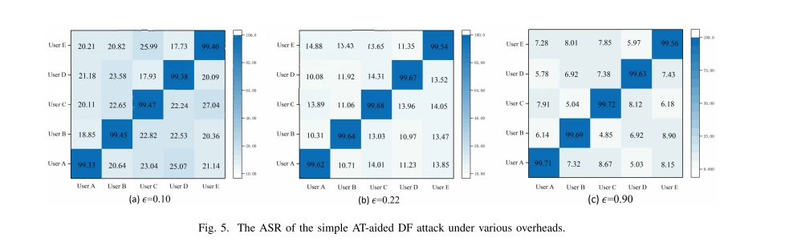
训练与测试为同一用户，ASR > 99%。
ASR 显著下降，用户间差异起作用。
ε 从 0.10 增至 0.90，ASR 由约 20% 降至 9% 以下，开销同步上升。
4 个攻击者协作用各自数据训练，识别第 5 个用户
| 用户 | 开销 | DF（ASR） | AWF（ASR） | Var-CNN（ASR） | ||||
|---|---|---|---|---|---|---|---|---|
| AWA | ALERT | AWA | ALERT | AWA | ALERT | AWA | ALERT | |
| A | 21.80% | 20.13% | 61.44% | 33.83% | 37.28% | 17.24% | 34.18% | 19.12% |
| B | 21.19% | 20.67% | 52.46% | 32.09% | 32.98% | 14.53% | 30.97% | 20.53% |
| C | 21.94% | 19.99% | 59.42% | 38.52% | 38.19% | 16.93% | 38.22% | 20.08% |
| D | 19.94% | 20.34% | 54.97% | 33.98% | 35.63% | 14.99% | 44.03% | 15.33% |
| E | 20.96% | 20.17% | 57.54% | 37.32% | 37.22% | 18.16% | 37.88% | 23.21% |
| 平均 | 21.17% | 20.26% | 57.17% | 35.15% | 36.26% | 16.37% | 37.06% | 19.65% |
平均 ASR：DF 35.15%、AWF 16.37%、Var-CNN 19.65%；AWA 对应为 57.17%、36.26%、37.06%。开销：ALERT 20.26%，AWA 21.17%。数据来源：论文表 III。
攻击者先判断是否监控，再识别具体网站；指标为真阳率（TPR）与假阳率（FPR）
| 方法 | 开销 | DF | AWF | Var-CNN | |||
|---|---|---|---|---|---|---|---|
| TPR | FPR | TPR | FPR | TPR | FPR | ||
| 无防御 | 0% | 91.80% | 1.69% | 57.97% | 1.36% | 75.87% | 0.85% |
| WTF-PAD | 64.00% | 52.94% | 3.66% | 0.92% | 0.73% | 34.55% | 1.17% |
| Mockingbird | 71.79% | 84.72% | 3.18% | 44.19% | 2.54% | 60.23% | 2.13% |
| ALERT | 19.91% | 37.46% | 43.71% | 40.26% | 60.27% | 12.64% | 0.51% |
DF：TPR 37.46%，FPR 43.71%；AWF：40.26% / 60.27%。
12.64% / 0.51%，误报最低。
表 IV 只给出一组 TPR/FPR，未报告固定 FPR 下的 TPR。
TPR（True Positive Rate，真阳率）：监控流量被正确识别的比例；FPR（False Positive Rate，假阳率）：未监控流量被误判为监控的比例。数据来源：论文表 IV。
PR（Precision-Recall）与 ROC（Receiver Operating Characteristic）曲线整体下移
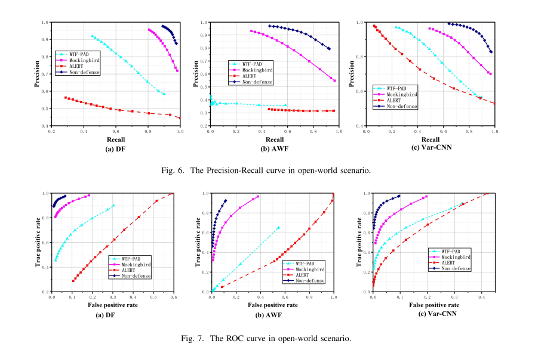
热图给出敏感位置，t-SNE 给出分布差异
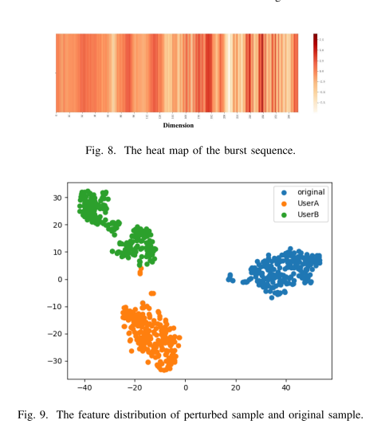
注：图 8 仅展示前 300 维；图 9 为 t-SNE 二维投影，邻域参数会影响簇间距离。
论文假设攻击者知道防御存在，但拿不到受害者的扰动实例
| 维度 | 论文设定 |
|---|---|
| 位置 | 用户与入口节点之间的链路；被动窃听，不解密、不改包 |
| 数据 | 可伪装成用户采集 trace；可用同一 PT（pluggable transport，可插拔传输）采集扰动样本（脚注 3） |
| 训练 | 可使用 simple AT 或 advanced AT；多个攻击者可协同 |
| 防御知识 | 知道防御已部署，但不知道受害者的 z、生成器分配与模仿对象 |
| 分类器 | 防御方不知道攻击者模型；攻击者可自行选择 DF / AWF / Var-CNN |
论文的结论成立，但覆盖范围小于摘要给人的印象
| 结论 | 论文覆盖 | 尚未覆盖 |
|---|---|---|
| 抗 simple AT | 闭环，5 个用户 | — |
| 抗 advanced AT | 闭环，4 个攻击者 + 1 个受害者 | 更多攻击者；攻击者自行采样大量模仿配置（profile） |
| 开环可用 | 普通 DF / AWF / Var-CNN | 开环 + AT |
| 可解释性 | 敏感度热图与 t-SNE | 高维空间中的定量验证 |
三点结论，一点保留
AE 防御要可部署，需同时满足轨迹无关、抗 AT、可扩展开环。
UP + 随机网站模仿 + 三项损失；DF 作替代模型，在线只依赖噪声。
闭环 DF 12.68%（开销 20.13%）；advanced AT 35.15%；开环 TPR 37.46% / FPR 43.71%。
抗 AT 的证据只覆盖 5 个用户；开环实验未包含 AT；35.15% 仍远高于 1.05% 的随机基线。
欢迎讨论
Trace-agnostic and Adversarial Training-resilient Website Fingerprinting Defense (Qiao et al., INFOCOM 2024)